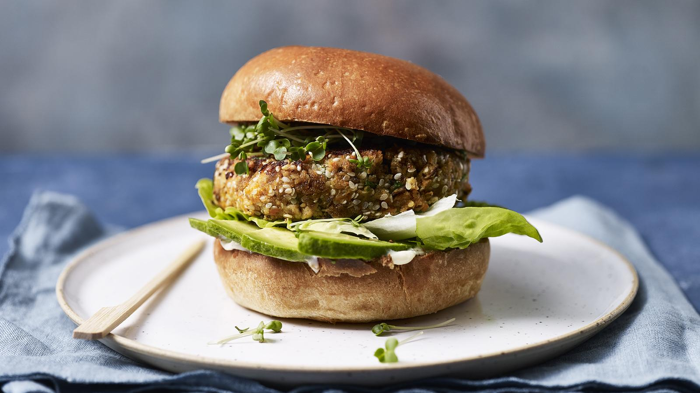

Veggie Burger Recipe
Home

Description
These delicious carrot and tofu veggie burgers can be fried, baked or barbecued.
Each serving provides 677kcal, 12g protein, 48g carbohydrate (of which 11g sugars), 46g fat (of which 8g saturates), 9g fibre and 1.1g salt.
Ingredients
For the burger
- 600g/1lb 5oz carrots, peeled and cut into 1–2cm/½–¾in rounds
- 1 tsp smoked sweet paprika
- 1 tsp cumin seeds, roughly bashed in a pestle and mortar
- 4 tbsp olive oil
- 200g/7oz smoked tofu
- 100g/3½oz rye breadcrumbs
- small bunch fresh flatleaf parsley, finely chopped
- 1 lemon, zest only
- 50g/1¾oz Parmesan (or a similar vegetarian alternative), grated
- 50g/1¾oz sesame seeds, toasted
- salt and freshly ground black pepper
To serve
- 6 burger buns or slices rye bread
- 6 tbsp mayonnaise
- 6 pinches smoked paprika
- 12 small lettuce leaves
- 2 avocados, sliced
- punnet salad cress, picked
Steps
- Preheat the oven to 200C/180C Fan/Gas 6.
- Put the carrots in a roasting tin and coat in the spices and 2 tablespoons of olive oil. Season with salt and pepper and cover with foil. Roast for 20 minutes, then remove the foil and roast for another 10 minutes, until soft and starting to brown.
- Meanwhile, crumble half the tofu into a bowl and stir in the breadcrumbs, parsley, lemon zest, Parmesan and sesame seeds.
- Blend the carrots with the remaining tofu in a food processor, until well combined and pretty smooth. Leave to cool.
- Mash the carrot and breadcrumb mixtures until they come together. If your mixture looks a little dry, add a couple of tablespoons of olive oil or water.
- Shape the mixture into six patties and put them into the fridge for 20 minutes.
- Heat the remaining olive oil in a large frying pan and cook the burgers for 3–4 minutes on each side, flipping them once they are well coloured.
- To serve, toast the burger buns. Spread each bun with a tablespoon of mayonnaise, add a pinch of paprika, then top with the lettuce leaves, avocado, burger and a handful of cress.